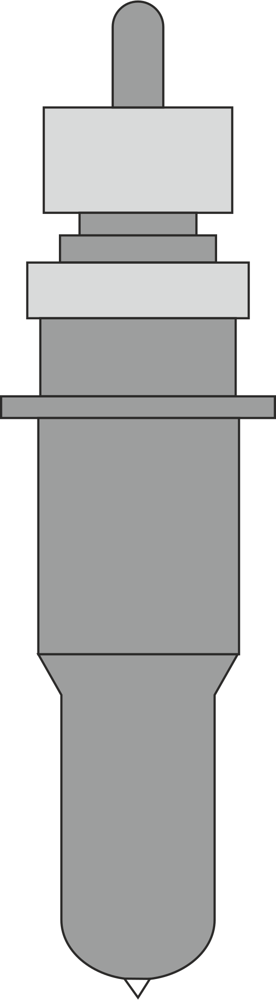

HPGL (иногда пишут HP-GL) является основным языком управления принтерами, используемым плоттерами Hewlett-Packard. Его название представляет собой аббревиатуру Hewlett-Packard Graphics Language. В данный момент он является стандартным почти для всех плоттеров. Принтеры Hewlett-Packard, как правило, также поддерживают HPGL наравне с PCL. Значения расчитываются в минимальном,
Описание некоторых команд языка
Команды языка представляют собой сочетание кода из двух букв и следующих за ним дополнительных параметров. Каждая команда заканчивается точкой с запятой. Координаты пера задаются в наименьших единицах, поддерживаемых плоттерами производства HP — 25 мкм (то есть 40 единиц на миллиметр, 1016 на дюйм) и задаются числами с плавающей точкой (запятой) в пределах ±230. Перечисление координат и других параметров, указанных в качестве параметра команды разделяются запятой, пробелы после запятой и кода команды необязательны, эквивалентно, например, PA 0, 0; и PA0,0.
Команды
| CMD | Считывание меток |
| IN | Инициализация процесса черчения |
| PG | Вывод страницы |
| PU | Подъем пера |
| PD | Опускание пера |
| SP | Выбор инструмента |
PU (Подъем пера)
Поднимает активное перо со стола
Пример резки по меткам на листе формата SRA3
$IN; CMD:307,100,100,17000,11800; PU; SP1; PU624 3058; PD3135 3058;PD3184 3053;PD3230 3039;PD3271 3016; PD3307 2986;PD3337 2950;PD3360 2909;PD3374 2863; PD3379 2814;PD3379 903;PD3374 854;PD3360 808; PD3337 766;PD3307 730;PD3271 700;PD3230 678; PD3184 663;PD3135 658;PD624 658;PD574 663; PD529 678;PD487 700;PD451 730;PD421 766; PD398 808;PD384 854;PD379 903;PD379 2814; PD384 2863;PD398 2909;PD421 2950;PD451 2986; PD487 3016;PD529 3039;PD574 3053;PD624 3058; PU; SP1; PU19199,0; !PG;;#
Расчёт CMD
Синтаксис команды CMD:307,100,100,17000,11800;